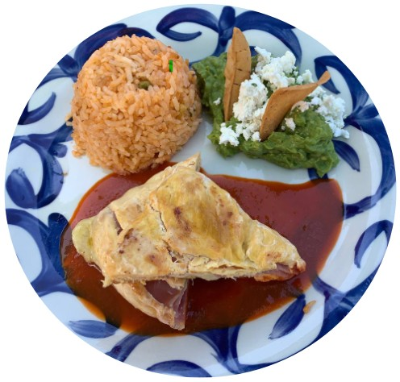

Hojaldre de jamón y queso
Hojaldre relleno de jamón y queso, servido sobre una salsa roja no muy picante. Acompañado de un clásico arroz rojo mexicano, preparado con caldillo de tomate. Una porción de guacamole fresco, con totopos y queso fresco
🌶️ Suave